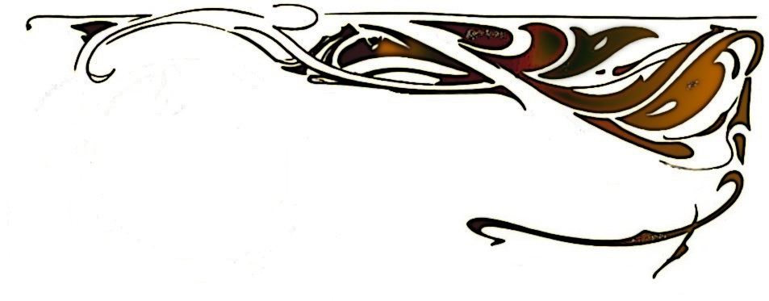
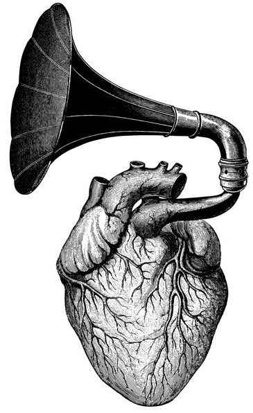

EMOTION
" N'oublions pas que les petites émotions sont les grands capitaines de nos vies et qu'à celles-là nous y obéissons sans le savoir. " Vincent VAN GOGH
Les émotions sont des états mentaux qui relèvent d’une construction du système nerveux se complexifiant avec l’évolution, mais dont l’objectif partagé est d’assurer la survie de l’individu et de l’espèce. En 1872, Charles DARWIN va poser les fondements de l'expression des émotions et va les décrire comme innées, universelles et communicantes.
Une émotion est un ressenti tant psychique que physique à intensité variable qui se produit sous l'influence d'un évènement particulier et perturbateur (environnement, relationnel, etc.). D'un point de vue comportemental, l'émotion est perçue comme une forme de moteur influençant le choix d'une personne en réponse à un stimulus externe ou interne. D'un point de vue social, elle est une réponse donnée à une interaction avec nous-même et les autres ou encore un contexte. Une émotion ne dure que quelques secondes et marque l'instant présent. Elle est le centre de toute relation et passe inéluctablement par le corps. C'est un ingrédient fondamental de l'existence qui nous positionne dans le contexte dans lequel nous sommes. Elle a également une fonction spatio temporelle.
Les émotions peuvent être considérées comme une réaction transitoire, bio-psycho-sociales conçue pour aider les individus à s’adapter et à faire face à des événements qui ont des implications pour leur survie et leur bien-être. Elles semblent donc innées, indépendantes de l'éducation ou de la culture reçue. Elles ont une valeur universelle pour toute l'espèce humaine en ce sens que chacune d'elles s'exprime pratiquement avec les mêmes signes chez chacun, signes qui ont ainsi valeur de langage. Ce qui peut nous pousser à nous interroger sur le sens à donner à nos émotions. Vraissemblablement le plus ancien langage, bien avant le mot. Il permet de dire, de montrer l'indicible, d'exprimer parfois l'insupportable ou l'inacceptable. Ainsi, quand nous ne pouvons mettre des mots sur le retentissement d'un fait, d'une parole, d'une conduite sur nos blessures, une émotion va témoigner de ce qui est touché en nous en provoquant un mot, un comportement, un évènement, autant de stimuli qui peuvent nous rendre peureux ou heureux, nous paralyser, nous rendre irascibles, nous pousser à la fuite, à un acte de violence ou à un rapprochement, nous faire fondre de plaisir ou nous entrainer dans une tristesse infinie.
Alors laissons nous concevoir, juste un instant, que l'homme est avant tout un être social et d'émotion avant d'être intellectuel et réfléchi. Que de prioriser le contrôle en occultant le rapport à soi peut alors créer symptôme et dysfonction. Si l'émotion est un discours, une dialectique de l'inconscient (vers le conscient), sa résultante est une forme d'énergie qui parfois se cumule faute de ne pas être utilisée. Surgit alors le symptôme qui peut se manifester sous forme psychosomatique, une souffrance de l'humeur, de l'anxiété ou d'autres troubles tant psychiques que corporels.
Une émotion est un ressenti tant psychique que physique à intensité variable qui se produit sous l'influence d'un évènement particulier et perturbateur (environnement, relationnel, etc.). D'un point de vue comportemental, l'émotion est perçue comme une forme de moteur influençant le choix d'une personne en réponse à un stimulus externe ou interne. D'un point de vue social, elle est une réponse donnée à une interaction avec nous-même et les autres ou encore un contexte. Une émotion ne dure que quelques secondes et marque l'instant présent. Elle est le centre de toute relation et passe inéluctablement par le corps. C'est un ingrédient fondamental de l'existence qui nous positionne dans le contexte dans lequel nous sommes. Elle a également une fonction spatio temporelle.
Les émotions peuvent être considérées comme une réaction transitoire, bio-psycho-sociales conçue pour aider les individus à s’adapter et à faire face à des événements qui ont des implications pour leur survie et leur bien-être. Elles semblent donc innées, indépendantes de l'éducation ou de la culture reçue. Elles ont une valeur universelle pour toute l'espèce humaine en ce sens que chacune d'elles s'exprime pratiquement avec les mêmes signes chez chacun, signes qui ont ainsi valeur de langage. Ce qui peut nous pousser à nous interroger sur le sens à donner à nos émotions. Vraissemblablement le plus ancien langage, bien avant le mot. Il permet de dire, de montrer l'indicible, d'exprimer parfois l'insupportable ou l'inacceptable. Ainsi, quand nous ne pouvons mettre des mots sur le retentissement d'un fait, d'une parole, d'une conduite sur nos blessures, une émotion va témoigner de ce qui est touché en nous en provoquant un mot, un comportement, un évènement, autant de stimuli qui peuvent nous rendre peureux ou heureux, nous paralyser, nous rendre irascibles, nous pousser à la fuite, à un acte de violence ou à un rapprochement, nous faire fondre de plaisir ou nous entrainer dans une tristesse infinie.
Alors laissons nous concevoir, juste un instant, que l'homme est avant tout un être social et d'émotion avant d'être intellectuel et réfléchi. Que de prioriser le contrôle en occultant le rapport à soi peut alors créer symptôme et dysfonction. Si l'émotion est un discours, une dialectique de l'inconscient (vers le conscient), sa résultante est une forme d'énergie qui parfois se cumule faute de ne pas être utilisée. Surgit alors le symptôme qui peut se manifester sous forme psychosomatique, une souffrance de l'humeur, de l'anxiété ou d'autres troubles tant psychiques que corporels.

D'une généralité, les émotions (inconscientes) influencent nos sentiments (conscients), donc nos réponses volontaires à ce que nous comprenons de nos ressentis. Mais cela est loin d'être une obligation et de percevoir plus finement notre champs émotionnel nous permet d'être acteur de nos sentiments en les choisissant et non en nous les imposant. Elles sont des réponses adaptatives au monde, pas simplement des sensations abstraites.
Parfois, notre discours émotionnel peut dysfonctionner et peut nous contraindre à un malaise intérieur. Difficulté dans son expression, son éprouvé, une perception d'anesthésie ou à l'opposé une hyper émotivité, une expressivité hyperbolique, sa gestion peut alors être délicate et invalider nos interactions. Chez l’être humain, les conséquences d’un stress constant, réponse adaptative à l'environnement, sont notamment une réduction de la flexibilité émotionnelle, cognitive et comportementale, c’est-à-dire une diminution des capacités à passer d’une émotion à une autre, d’une pensée à une autre, ou d’un comportement à un autre dans une situation donnée. D’où moins de solutions différentes pour faire face à une situation, et une expression rigide des comportements défensifs.
Accepter d'entendre ses émotions, de les respecter (et non de les maîtriser ou de les réprimer) est l'un des moyens, des chemins que l'on peut prendre pour être en accord avec soi-même. Ainsi, l'hypnose par ses modalités spécifiques, peut être entendu comme l'outil juste adapté pour rétablir l'équilibre désiré. Il permet, entre autre, de travailler sur le décriptage langagier du ressenti émotionnel. Parfois il suffit simplement de s'autoriser à ressentir et l'hypnose devient un facilitateur, une interface psychique entre l'éprouvé, la perception et le sentiment !
Parfois, notre discours émotionnel peut dysfonctionner et peut nous contraindre à un malaise intérieur. Difficulté dans son expression, son éprouvé, une perception d'anesthésie ou à l'opposé une hyper émotivité, une expressivité hyperbolique, sa gestion peut alors être délicate et invalider nos interactions. Chez l’être humain, les conséquences d’un stress constant, réponse adaptative à l'environnement, sont notamment une réduction de la flexibilité émotionnelle, cognitive et comportementale, c’est-à-dire une diminution des capacités à passer d’une émotion à une autre, d’une pensée à une autre, ou d’un comportement à un autre dans une situation donnée. D’où moins de solutions différentes pour faire face à une situation, et une expression rigide des comportements défensifs.
Accepter d'entendre ses émotions, de les respecter (et non de les maîtriser ou de les réprimer) est l'un des moyens, des chemins que l'on peut prendre pour être en accord avec soi-même. Ainsi, l'hypnose par ses modalités spécifiques, peut être entendu comme l'outil juste adapté pour rétablir l'équilibre désiré. Il permet, entre autre, de travailler sur le décriptage langagier du ressenti émotionnel. Parfois il suffit simplement de s'autoriser à ressentir et l'hypnose devient un facilitateur, une interface psychique entre l'éprouvé, la perception et le sentiment !

EN RELATION


EMOTION
TOXIC Ô MANIE
(ne pas voir)
ANXIETE
COMMUNIQUER
PERSONNALITE
FRUSTRATION